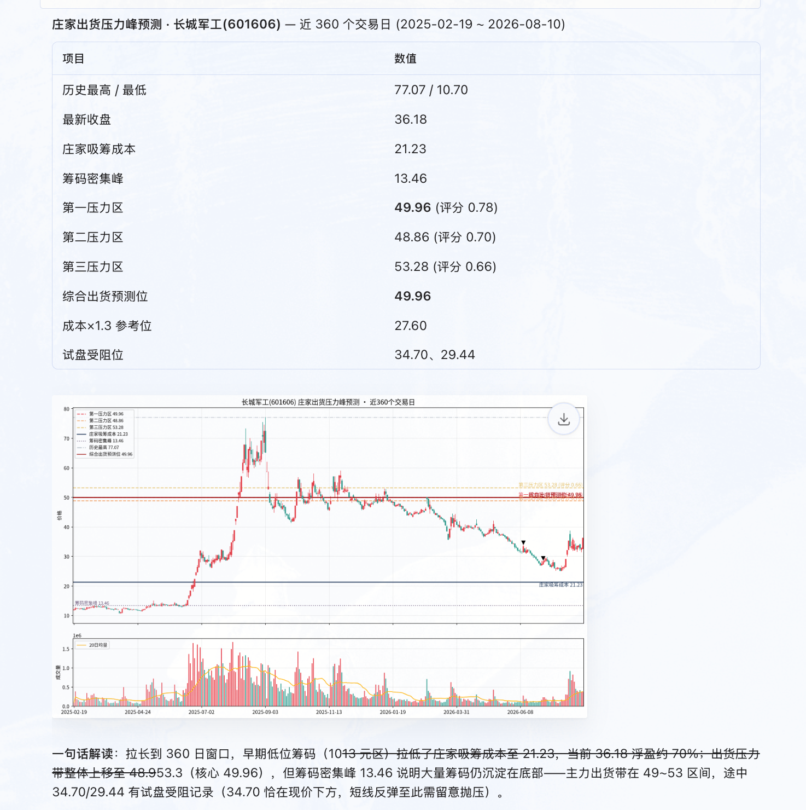
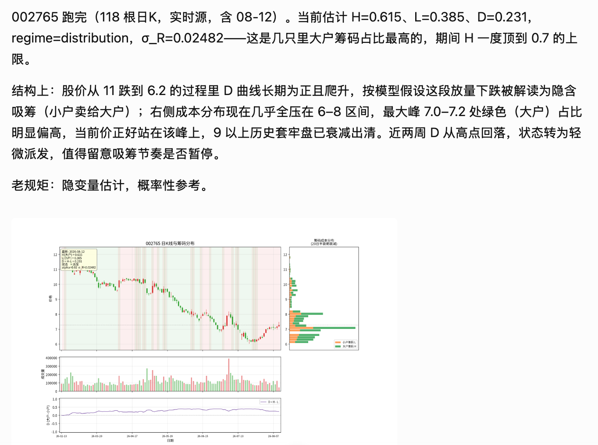
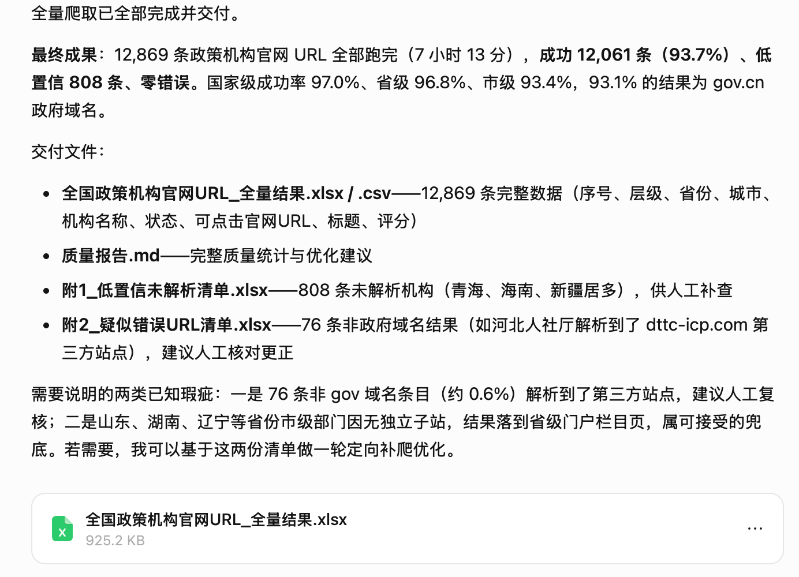
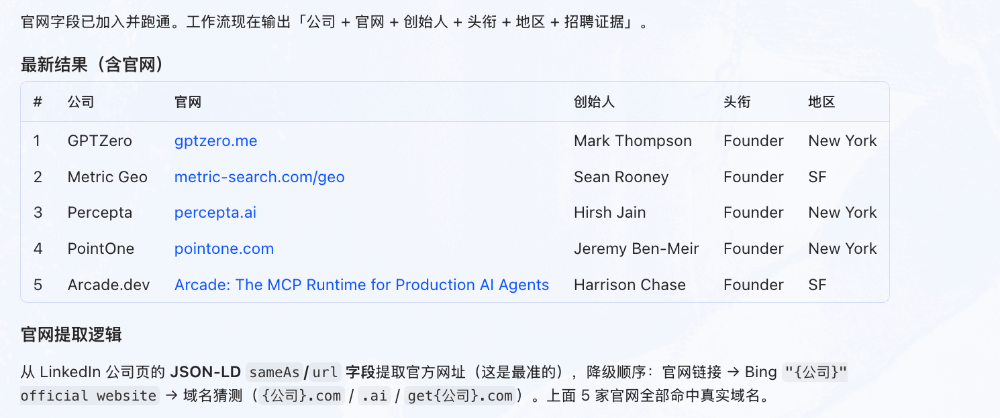
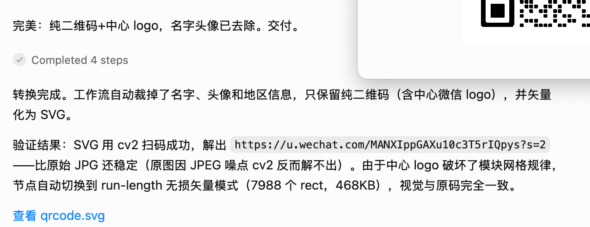

对话生成工作流
直接用自然语言描述任务，生成 workflow.json、节点脚本和入口代码。
Overview
如果你希望把“提出需求 → 生成工作流 → 启动服务 → 在对话中运行”串成一条连续链路， FlowX 就是这条链路的 MCP 入口。
直接用自然语言描述任务，生成 workflow.json、节点脚本和入口代码。
修改需求后可继续更新节点，并立即重启后端，避免旧版本流程继续运行。
支持 stdio 和 Streamable HTTP，便于接入本地 Agent 或常驻远程服务。
可以查看输入格式、执行工作流步骤，并拿回结果、文件或图像用于后续对话。
Usage
本地 MCP 配置示例
下面是一个精简版的本地 stdio 配置，适合快速验证。
{
"mcpServers": {
"flowx": {
"command": "python3.10",
"args": ["/Users/user/Desktop/codes/FlowX/run_server.py"],
"env": {
"FLOWX_LLM_PROVIDER": "deepseek",
"FLOWX_LLM_MODEL": "deepseek-chat",
"FLOWX_LLM_API_KEY": "<your key>",
"FLOWX_DEFAULT_WORKSPACE": "/Users/user/Desktop/codes/flowx_workspaces"
}
}
}
}Showcase
stock_pressure
根据最近 N 个交易日的价格、成交量和筹码分布，推断多个潜在出货压力区， 并把关键参考位画到图上。

stock_distribution
把价格和成交量转换成隐含大户/小户筹码状态，用图表解释吸筹、派发和成本峰。

policy_scrawler
结合地域、机构模板和浏览器搜索，批量收集全国政策机构官网 URL 并给出质量结果。

start-up-hiring
从 LinkedIn 等来源整理正在招聘的 AI Startup、官网、创始人、头衔和地区信息。

picture_to_svg
上传微信二维码图片，自动去除姓名、头像等信息，并导出为更干净的 SVG 文件。

Contact
你可以直接发邮件，或通过微信二维码联系作者。